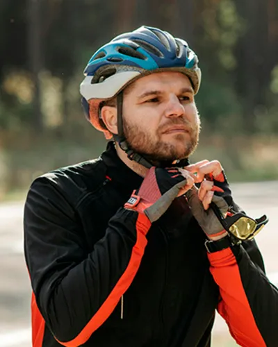

Mountain Bike Tips

Mountain Bike Safety Tips
- Wear a Helmet: It’s the most basic but crucial piece of protective gear. Make sure it fits properly.
- Protective Gear: Pads (knee, elbow, and gloves) can help prevent injuries, especially for more technical trails or downhill rides.
- Know How to Fall: If you do fall, it’s important to know how to protect yourself. Tuck your arms and try to roll rather than landing directly on your limbs.
- Bike Check: Before each event, participants should do a quick inspection to ensure the brakes, tires, and chain are functioning properly.
- Ride Within Your Limits: It’s important to not push beyond your skill level, especially on unfamiliar trails or difficult terrain.
Health and Fitness Tips for Riders
- Stay Hydrated: Dehydration is a major risk during physical activity, especially on warm days or challenging rides. Bring enough water and know where refill stations are located along the route.
- Snacks: Carry high-energy snacks like energy bars, nuts, or bananas to maintain stamina. It’s important to refuel every hour or two, especially on longer rides.
- Stretch Before and After: Stretching can help prevent muscle strains and improve flexibility. Focus on your legs, hips, and lower back before and after the ride.
- Pacing: Don't go all-out from the start. Maintain a steady pace to avoid burnout and muscle fatigue, particularly if the ride includes tough climbs or technical sections.
Weather Awareness and Dress
- Layering: It’s always a good idea to layer your clothing, as weather can change quickly, especially in mountainous areas. Wear moisture-wicking base layers, a breathable outer layer, and bring a jacket if there's a chance of rain.
- Sun Protection: Even on cloudy days, UV rays can still cause damage. Wear sunscreen and protect your eyes with sunglasses.
- Cold Weather: If riding in cold conditions, ensure you have gloves, a hat, and warm clothing. Cold temperatures can increase the risk of frostbite and hypothermia.
Mountain Biking Adventure